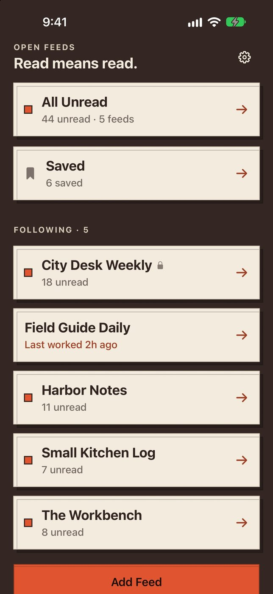
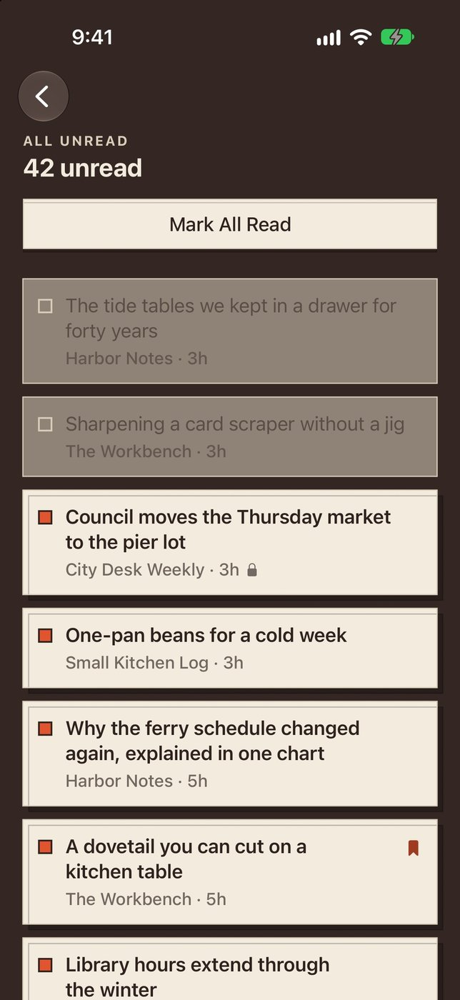
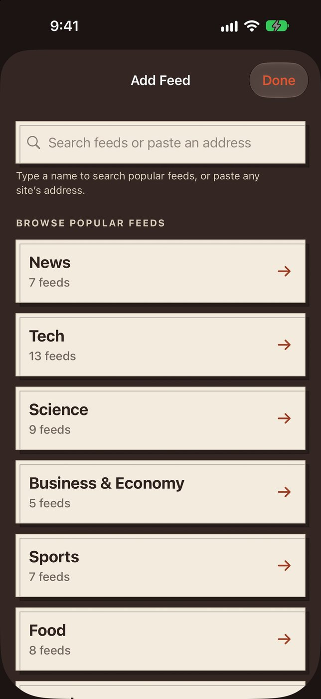

“lost all of the feeds I had spent years curating”
What Open Feeds does instead
Saves your list of feeds as an ordinary OPML file in Files after every change, and recovers from it.
Open AppCo app #7
Follow any site. Read means read. Your feed list stays yours.
Wait for Apple's review decision.
The actual app



60-second device check
On a real iPhone: launch from the Home Screen, open All Unread, read an article and watch the unread count drop, then browse popular feeds.
Why this app exists
“lost all of the feeds I had spent years curating”
Saves your list of feeds as an ordinary OPML file in Files after every change, and recovers from it.
“I’m constantly seeing things I’ve already read”
Read headlines stay read. A refresh never brings them back as unread.
“Unable to mark as read while scrolling”
Marks headlines read as you scroll past them. You can turn that off.
“Mark as Read requires at least 2 presses”
Mark All Read clears the list in one tap, with Undo.
“Only 10 feeds max allowed on free version”
Follow as many feeds as you like, free. No subscription or unlock.
“Can’t add any new feeds unless you know the exact RSS URL”
Paste any site’s address and it finds the feed, or browse about 270 checked popular feeds.
“takes me back to the login screen”
No account. Nothing to sign in to, ever.
“The app loads with about 20 feeds you never asked for”
Starts empty. Nothing is followed until you choose it.
On October 11, 2026, we captured 8,959 unique public review entries across 12 source apps (8 feed readers and 4 news apps); 3,745 were rated one to three stars. The audit requested pages 1–10 of Apple's most-recent and most-helpful feeds in the United States, Canada, Great Britain and Australia. All 403 requested feed snapshots succeeded.
Apple caps these public feeds at ten pages. Three source apps filled page 10, so older reviews may exist beyond what Apple exposed. This is every verified complaint category Open Feeds claims to address—not every review ever written.